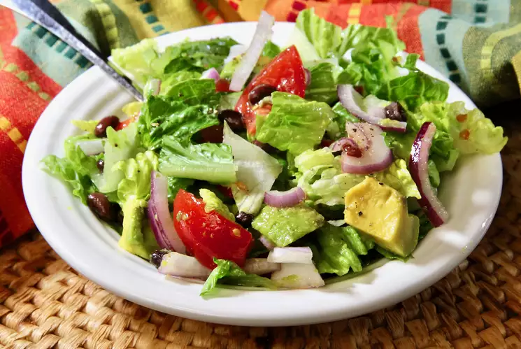

Cuban Salad

Ingredients
- Salad:
- 1 heads romaine lettuce, chopped
- 2 medium tomatoes (such as Campari®), cut into wedges
- 1 medium avocados - peeled, pitted, and cubed
- ½ medium red onion, halved and thinly sliced
- ¼ (15.5 ounce) can black beans, rinsed and drained
- Dressing:
- 2 tablespoons fresh lime juice
- ½ teaspoon honey
- ½ clove garlic, minced
- ¼ teaspoon ground cumin
- ⅛ teaspoon salt
- freshly ground black pepper to taste
- freshly ground black pepper to taste
Steps
Combine romaine, tomatoes, avocados, onion, and black beans in a large bowl; toss to combine.
Whisk lime juice, honey, garlic, cumin, salt, and pepper together in a small bowl. While constantly whisking, stream in the olive oil until dressing is well combined.
Drizzle some of the dressing over the salad, toss, taste, and add more dressing if desired. If there's any extra dressing, refrigerate for later use.